Causes and Consequences of Ekwǫ̀ calving ground switching and shifts
Draft Report for WRRB
1 Background
Barren-ground caribou across northern Canada are organized and managed as herds that are defined by the calving grounds they use each year Nagy et al. (2011). Female fidelity to these calving areas has long been treated as the basis for identifying population units and for guiding monitoring and harvest management (Gunn and Miller 1986, Gunn et al. 2017). This framework assumes that individuals consistently return to the same calving grounds year after year, which in turn maintains consistent separation among herds. This is generally an accurate characterization – as evidenced by copious empirical data and theoretical frameworks that emphasize the importance of sociality and gregariousness for caribou (Gunn et al. 2012). However, ever since individual cows could be identified and tracked for multiple years, we have known that herds are not closed populations and a low level switching calving grounds is typical fidelity by the majority of cows.
Telemetry data collected over the last two decades show that winter ranges used by neighboring herds often overlap. For example, the Western Arctic, Teshukpuk, Central Arctic and Porcupine Caribou herds in Alaska display both seasonal range overlap and herd interchange (Prichard et al. 2020). Among the Rivière Georges and Rivière-aux-Feuilles herds in northern Québec and Labrador, there is similarly considerable spatial overlap among these herds, including during the rut Boulet et al. (2007). In the central Canadian Arctic, Gurarie et al. (2023) documented highly variable winter overlap: at times very high (over 70%), at times near zero among all three major caribou herds, (Bluenose East, Bathurst and Beverly). These changes in spatial overlap can complicate herd-specific monitoring efforts because animals from different herds use the same landscapes during key periods of the annual cycle (Gurarie et al. 2023).
Collar data also show that calving-ground fidelity, while generally very high, can vary among individuals. In Alaska, up to 13% for the smaller herds (Teshekpuk and Central Arctic) calved with neighboring herds – what the authors refer to as “interchange”. This interchange, importantly, was strongly asymmetric: the large majority of switching events went from the two smaller herds to the two larger herds, with little flow in the reverse direction (Prichard et al. 2020). In northern Québec and Labrador, cross-herd interchange is at least high enough to cause there to be no genetic differentiation between the Rivière Georges and Rivière-aux-Feuilles herds (Boulet et al. 2007). Biologists monitoring caribou in the central Arctic document many cases of collared animals switching calving grounds - usually several a year. For example, between 1970 and 1979, based on 1300 marked caribou the switching rate between the Beverly and Qamanirjuaq calving grounds was 1.8% and 3.4%, respectively (Heard 1984). Campbell et al. (2019) reported 3 of 93 (3.1%) collared Bathurst animals switching to the Beverly range between 2010 and 2018, with none going the other way, though all of those occurred in the last year of monitoring (3 of 11 in 2018), with considerably more switching between Beverly and mainland Nunavut and Ahiak herds (10 of 116 out of Beverly, 7 of 26 into Beverly). Relatedly, considerable debate surrounds the identity of Ahiak and Beverly herds. For example an argument made that the entire distinct Beverly herd – which traditionally calved in the interior of northern Nunavut near Beverly Lake – had been absorbed into the Ahiak herd (with a more coastal calving range) as the consequence of a herd-level population decline, possibly accelerated by large-scale herd switching between mid-1990’s and 2011 (Adamczewski et al. 2015). Collectively, these animals are generally refered to as Beverly, while Ahiak animals are now considered to animals calving on the coast further east along the Arctic coastline. These observations across the North American migratory caribou range point to the dynamic nature of herd association and identity, and to the role that both shifting between calving ranges, and the shifting of calving ranges themselves, play in herd structures.
Since 2017, a significant number of collared females from the greatly diminished Bathurst herd have migrated to the east coast of Bathurst Inlet during the pre-calving period, an area situated outside the presently recognized Bathurst calving ground but documented as a calving region for Bathurst animals until the mid-1990s Gunn et al. (2012). Herd switching rates, in and out of the Bathurst, Bluenose East and Beverly herds, have apparently also been on the rise. Our immediate goals in this report is to: (1) Quantify the switching rates among these herds; (2) assess whether winter associations between herds lead to a higher rate of calving ground switching; and (3) assess whether animals travel together share common destinations. The collected information to determine whether social interactions may be increasing the likelihood of herd switching and thus slowing the recovery of the Bathurst population, and provide evidence for or against a “socially mediated Allee affect”, i.e. the notion that social interactions among herds during non-calving seasons can accelerate the numeric decline of a highly depleted herd. Improved understanding of the causes and consequences of calving-ground switching is essential for interpreting population trends, coordinating management across regions, and supporting conservation planning for migratory caribou.
2 Methods
2.1 Coastal Areas
We took a purely spatial approach to classifying the calving ground association of each animal in each year, more or less following the techniques introduced by (Nagy?). We delineated 7 greater calving ground areas (Figure Figure 1). For most coastal areas, the herd association is very clear. These include the Tuktuyaktuk Peninsula (TUK) and Cape Bathurst (CBT). Bluenose West and Bluenose East herds are also fairly well clustered in the respective coastal areas (BLW and BLE). The Bathurst herd is mainly associated with animals that calved in the Bathurst Inlet West (BIW) coastal area, but also some animals that calved east of Bathurst Inlet (BIE). Beverly herd animals are mainly captured by the Queen Maud Gulf (QMG); a very large area which shifts considerable across years.
A few animals are in the Northeast Mainland coastal area (NEM) - belonging to the complex of herds known as Wager Bay and Lorillard; these are largely outside the scope fo our analysis. Animals found outside of any of the coastal areas are either individuals that likely didn’t make it to the calving ground, or belong to the Qamanirjuaq herd that calves near Baker Lake in Eastern Nunavut.
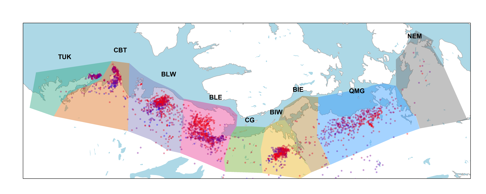
2.2 Classifying Individual Caribou by Peak Calving Date
We used data from female caribou instrumented with GPS collars by the Government of Northwest Territories (n = 1227, animal years = 2905). While our focus of these analyses is on the three major eastern herds (Bluenose East, Bathurst and Beverly), accounting for all the herds allows us to also consider movements into and out of this core group.
Collaring efforts in NWT date back to 1996, but the sample sizes increased significantly after 2006 (Figure Figure 2). Migration timing (Gurarie et al. 2019) and calving timing (Couriot et al. 2023) can vary considerably across years and among individuals among these herds. We estimated the calving time using the method of Couriot et al. (2023) for all the animals since 2006 (detailed results in Appendix B, Table Table 5 and Figure Figure 13.). While there is a distinct west to east gradient in mean calving days (e.g. May 28 for Tuktuyaktok Peninsula, to June 6 for Beverly), the overall peak calving date across animals was June 3 (SD 7.5 days). We therefore assigned each individual to the coastal area of each individual on June 3. Since animals first arrive before calving if possible, and typically spend around a week with their calves before moving, this date should largely capture those animals still on the calving grounds after giving birth, and those on or near the calving ground before giving birth. The large size of the coastal areas also help absorb much of the variation in movement activity across animals. Note also, that whereas we use the calving locations of likely parturient females, our goal is to have a flexible method to classify all the females, not all of which reproduce, but many of which also migrate to calving grounds due to the strong social behaviors of these herding animals.
On balance, we feel that combining coastal areas with peak calving is a parsimonious and generally reliable method to classify all female caribou that is consistent with other common classifications, for example Nagy et al. (2011) and as currently conducted by the GNWT. One immediate issue that arises is the ambiguity of the “Bathust Inlet East” coastal area, as it straddles the very elongated and relatively more dynamic Beverly (formerly, Ahiak) calving grounds while being not too far from the current Bathurst Herd calving grounds, yet squarely overlapping with the areas that were formerly the core calving ground of the Bathurst herd. This is an area of ecological importance that appears to be increasingly used, even as the Bathurst and Beverly animals are appearing to mix. We embrace the ambiguity of this area by giving it its own designation. We also provide a detailed analysis of animals that appear to have calved in this area below (Section 3.2).
| Code | Coastal Area | Herd(s) | n | % |
|---|---|---|---|---|
| TUK | Tuktoyaktuk Peninsula | Tuktoyaktuk Peninsula | 146 | 5.0 |
| CBT | Cape Bathurst | Cape Bathurst | 351 | 12.1 |
| BLW | Bluenose Lake West | Bluenose West | 660 | 22.7 |
| BLE | Bluenose Lake East | Bluenose East | 725 | 25.0 |
| CG | Coronation Gulf | Bluenose East or Bathurst | 15 | 0.5 |
| BIW | Bathurst Inlet West | Bathurst | 451 | 15.5 |
| BIE | Bathurst Inlet East | Bathurst or Beverly | 31 | 1.1 |
| QMG | Queen Maud Gulf | Beverly or Ahiak | 439 | 15.1 |
| NEM | Northeast Mainland | Lorrilard or Wager Bay | 12 | 0.4 |
| OUT | Outside | Any of above - or Qamanirjuaq | 75 | 2.6 |
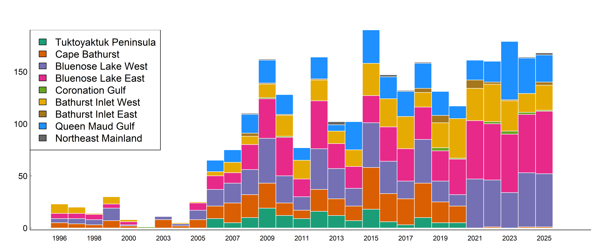
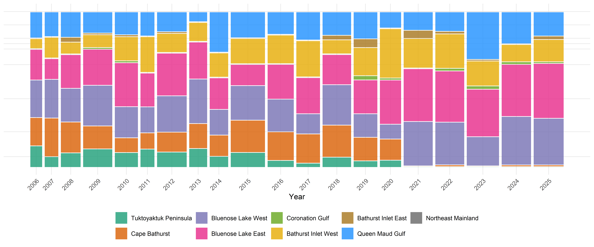
2.3 Comparing to Overall Population Size
When considering these numbers, it is important to recall that the absolute sizes of these populations are very different, and that they have changed considerably across years. The NWT conducts aerial surveys and reports estimates of these populations with some regularity. We use those reported estimates to obtain interpolated and smoothed estimates of population size across years for each herd, using Generalized Additive Models (GAMs). The results are shown in Figure Figure 4, and the methods are described in detail in Appendix C. In calculations of herd transitions, we will use these estimates as the baseline source populations to obtain coarse estimates of absolute numbers of individuals switching herds. These herds will correspond to their principal coastal areas, i.e. (skipping the self-evident Tuktoyaktuk Peninsula, Cape Bathurst, Bluenose Lake West and Bluenose Lake East), the Bathurst Herd will be associated with source populations from Bathurst Inlet West, and Beverly Herd animals will be associated with source populations from the Queen Maud Gulf coastal area.
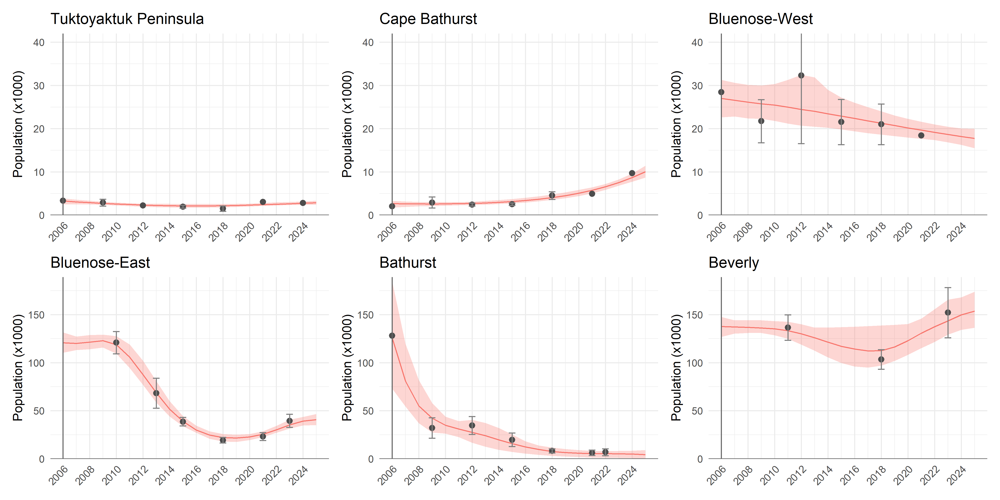
2.4 Trends and patterns in fidelity and switching
A complete table of transition counts and esimated numbers is shown in Table 2.
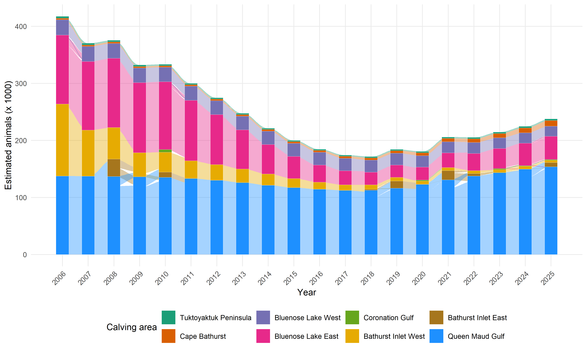
2.5 Spring Association
To evaluate whether social associations during the pre-calving period influence a female’s decision to switch calving areas from one year to the next, we computed two complementary metrics of spring sociality from the daily GPS locations of collared females during the March 1–April 15 pre-calving window. This timing window corresponds to the period just before most animals are actively moving toward calving grounds and are still on wintering grounds. We tested whether this period could correspond to a critical time when social bonds and movement decisions are likely to interact and influence each individual’s current year coastal calving location choice.
2.5.1 Nearest Neighbor
For each individual in each year, we computed daily mean locations to only have one location per individual per day (one location/individual/day). On every day when two or more individuals were observed, we calculated the pairwise distance between all dyads (pairs of two) of females. In other words, we calculated how far apart the daily mean locations of a female was from the daily mean locations of all other females that day. From these daily between-individual distances we derived two pairwise association indices for each dyad: (1) the mean daily separation in meters (\(D_{nn}\)), averaged across all days when both individuals were observed; and (2) the proportion of shared observation days on which the pair was within 2 km of one another (\(P_{close}\)) — a threshold chosen to reflect close spatial proximity consistent with active social association rather than chance co-occurrence. Pairs sharing fewer than 15 overlapping observation days during our selected pre-calving window were excluded from analyses to avoid unreliable estimates.
For each focal female, we identified its nearest neighbor: the individual with the smallest mean daily separation distance across the whole pre-calving window. The rationale for this metric is that a single, consistent close associate is could provide strong directional social information, potentially leading or reinforcing movement toward a particular calving area. We recorded both the identity and the coastal calving area of this nearest neighbor, allowing us to ask whether the neighbor’s calving affiliation predicted whether the focal animal switched its own calving area the following year.
2.5.2 Cross-Herd Mixing Index
Whereas the nearest-neighbor metric captures the influence of a single dominant social partner, an individual’s overall social environment during the pre-calving period may also reflect the breadth of its associations across herd boundaries. We therefore computed a cross-herd mixing index for each individual in each year, defined as the proportion of it’s total pairwise association strength directed toward individuals from other herds:
\[\text{Cross-herd mixing}_i = \frac{S_{\text{cross}}}{S_{\text{total}}} = \frac{\displaystyle\sum_{j\,:\,j \neq i} S_{ij}}{\displaystyle\sum_j S_{ij}}\]
where \(S_{ij}\) is the proportion of shared observation days on which individuals \(i\) and \(j\) were within 2 km of each other. This index ranges from 0 (all social contact with same-herd conspecifics) to 1 (all social contact with individuals from other herds). We additionally computed a cross-herd degree: the number of distinct other-herd partners with whom the focal individual spent at least 5% of shared days within the proximity threshold, across a minimum of 3 overlapping observation days. Together, these two metrics capture both the intensity and the diversity of cross-herd associations — providing a richer picture of individual social behaviour than the nearest neighbour distance alone.
2.7 Other predictors
- Shift from previous calving ground?
- Were you a previous switcher?
- Overlap
- Overall “socialness” - score
- Distance to new / old calving ground
- Distance from where wintered the previous year
- Years since collaring
3 Results
3.1 Overall summaries
A complete accounting of all collared females with their coastal area associations and transitions is provided in table Table 2, together with a highly approximate accounting .
Across all herds and years, the large majority of collared females returned to the same calving area as the previous year. Of 1492 total year-to-year transitions recorded, 1412 (94.6%) were to the same area, while 80 (5.4%) involved a switch to a different calving ground. Most switching occurred between neighboring areas — most commonly between BLE and BLW, and between CBT and TUK. More notable are movements into atypical areas distant from the main herd ranges. Bathurst Inlet East (BIE) and Coronation Gulf (CG) together account for 20 switching events: 13 to BIE (almost exclusively among Bathurst and Beverly animals) and 7 to CG (primarily Bluenose-East animals).
Of note are switching into areas that do not correspond to known or traditional calving grounds, in particular Coronation Gulf (CG) and East of Bathurst Inlet (BIE). These transitions have also been most pronounced for the Bathurst herd, and in recent years. In 2017, 50% of tracked Bathurst females did not return to BIW — the highest single-year rate in the dataset — with animals moving to both QMG and BIE. Departures from BIW recurred in most subsequent years through 2023. For Beverly, BIE destinations appeared sporadically through 2009 and again from 2018 onward.
3.1.1 Absolute Numbers
These figures can be expressed in approximate absolute numbers by weighting each observed transition by the contemporaneous herd population estimate, though these estimates carry substantial uncertainty — population surveys are infrequent, collar sample sizes are small, and the expansion from collared individuals to herd-wide totals compounds these errors considerably. The numbers below should therefore be treated as rough indicators of order of magnitude rather than precise counts.
With those caveats, movements to BIE across the full study period represent an estimated 78,085 animal-years (95% CI: 69,384–86,786), the large majority attributable to Beverly animals (74,950; CI: 67,940–81,960). Movements to CG represent an estimated 10,687 animal-years (CI: 9,449–11,925). For the Bathurst herd in 2017 — the year of peak switching — the estimated 4,845 animals departing BIW (CI: 2,454–7,236) should be viewed in the context of the herd’s already greatly reduced total of approximately 9,690 animals at that time.
| Year | n | % | Est. | n | % | Est. | n | % | Est. | n | % | Est. | n | % | Est. | n | % | Est. | |
|---|---|---|---|---|---|---|---|---|---|---|---|---|---|---|---|---|---|---|---|
| Bluenose-East | 2006 | 1 | 12.5 | 15108 | 7 | 87.5 | 105757 | ||||||||||||
| 2007 | 8 | 100 | 120089 | ||||||||||||||||
| 2008 | 16 | 100 | 121374 | ||||||||||||||||
| 2009 | 25 | 96.2 | 118120 | 1 | 3.8 | 4725 | |||||||||||||
| 2010 | 1 | 6.2 | 7427 | 15 | 93.8 | 111410 | |||||||||||||
| 2011 | 6 | 100 | 105869 | ||||||||||||||||
| 2012 | 22 | 100 | 87620 | ||||||||||||||||
| 2013 | 14 | 100 | 68628 | ||||||||||||||||
| 2014 | 13 | 100 | 51623 | ||||||||||||||||
| 2015 | 16 | 100 | 38903 | ||||||||||||||||
| 2016 | 26 | 100 | 30003 | ||||||||||||||||
| 2017 | 1 | 5.9 | 1453 | 16 | 94.1 | 23254 | |||||||||||||
| 2018 | 20 | 95.2 | 21116 | 1 | 4.8 | 1056 | |||||||||||||
| 2019 | 11 | 91.7 | 19794 | 1 | 8.3 | 1799 | |||||||||||||
| 2020 | 23 | 100 | 22663 | ||||||||||||||||
| 2021 | 3 | 6.5 | 1670 | 43 | 93.5 | 23944 | |||||||||||||
| 2022 | 30 | 90.9 | 27296 | 2 | 6.1 | 1820 | 1 | 3 | 910 | ||||||||||
| 2023 | 1 | 2.6 | 928 | 35 | 92.1 | 32480 | 1 | 2.6 | 928 | 1 | 2.6 | 928 | |||||||
| 2024 | 2 | 5.6 | 2175 | 32 | 88.9 | 34803 | 1 | 2.8 | 1088 | 1 | 2.8 | 1088 | |||||||
| Bathurst | 2006 | 3 | 100 | 126054 | |||||||||||||||
| 2007 | 6 | 100 | 80851 | ||||||||||||||||
| 2008 | 1 | 100 | 55145 | ||||||||||||||||
| 2009 | 7 | 87.5 | 36918 | 1 | 12.5 | 5274 | |||||||||||||
| 2010 | 1 | 14.3 | 4987 | 6 | 85.7 | 29923 | |||||||||||||
| 2011 | 7 | 100 | 30904 | ||||||||||||||||
| 2012 | 10 | 100 | 27545 | ||||||||||||||||
| 2013 | 3 | 100 | 23933 | ||||||||||||||||
| 2014 | 12 | 100 | 19773 | ||||||||||||||||
| 2015 | 20 | 100 | 15899 | ||||||||||||||||
| 2016 | 20 | 100 | 12433 | ||||||||||||||||
| 2017 | 5 | 50 | 4845 | 2 | 20 | 1938 | 3 | 30 | 2907 | ||||||||||
| 2018 | 11 | 84.6 | 6430 | 2 | 15.4 | 1169 | |||||||||||||
| 2019 | 7 | 100 | 6389 | ||||||||||||||||
| 2020 | 20 | 80 | 4629 | 4 | 16 | 926 | 1 | 4 | 231 | ||||||||||
| 2021 | 19 | 95 | 5143 | 1 | 5 | 271 | |||||||||||||
| 2022 | 14 | 82.4 | 4412 | 3 | 17.6 | 945 | |||||||||||||
| 2023 | 1 | 6.2 | 327 | 1 | 6.2 | 327 | 11 | 68.8 | 3600 | 3 | 18.8 | 982 | |||||||
| 2024 | 8 | 88.9 | 4404 | 1 | 11.1 | 550 | |||||||||||||
| Beverly | 2006 | 8 | 100 | 137598 | |||||||||||||||
| 2007 | 2 | 22.2 | 30504 | 7 | 77.8 | 106766 | |||||||||||||
| 2008 | 1 | 12.5 | 17110 | 7 | 87.5 | 119769 | |||||||||||||
| 2009 | 1 | 6.7 | 9084 | 1 | 6.7 | 9084 | 13 | 86.7 | 118090 | ||||||||||
| 2010 | 9 | 100 | 135317 | ||||||||||||||||
| 2011 | 3 | 100 | 133313 | ||||||||||||||||
| 2012 | 6 | 100 | 130154 | ||||||||||||||||
| 2013 | 3 | 100 | 125982 | ||||||||||||||||
| 2014 | 20 | 100 | 121486 | ||||||||||||||||
| 2015 | 20 | 100 | 117184 | ||||||||||||||||
| 2016 | 12 | 100 | 114300 | ||||||||||||||||
| 2017 | 15 | 100 | 112330 | ||||||||||||||||
| 2018 | 1 | 11.1 | 12503 | 8 | 88.9 | 100024 | |||||||||||||
| 2019 | 7 | 100 | 116333 | ||||||||||||||||
| 2020 | 1 | 12.5 | 15373 | 7 | 87.5 | 107610 | |||||||||||||
| 2021 | 1 | 11.1 | 14535 | 8 | 88.9 | 116284 | |||||||||||||
| 2022 | 11 | 100 | 137461 | ||||||||||||||||
| 2023 | 29 | 100 | 143596 | ||||||||||||||||
| 2024 | 1 | 5 | 7486 | 1 | 5 | 7486 | 18 | 90 | 134752 |
3.2 Focus on East of Bathurst Inlet
The sequence of images below focus on a important subset of animals (\(n=8\)) that calved east of Bathurst Inlat, in an area what was largely considered not to be the current calving ground of either Bahurst or Beverly herd animals. Of note: all but one of those animals were clearly Bathurst animals in the preciding year, and none of those animals ever returned to calve in that calving area.
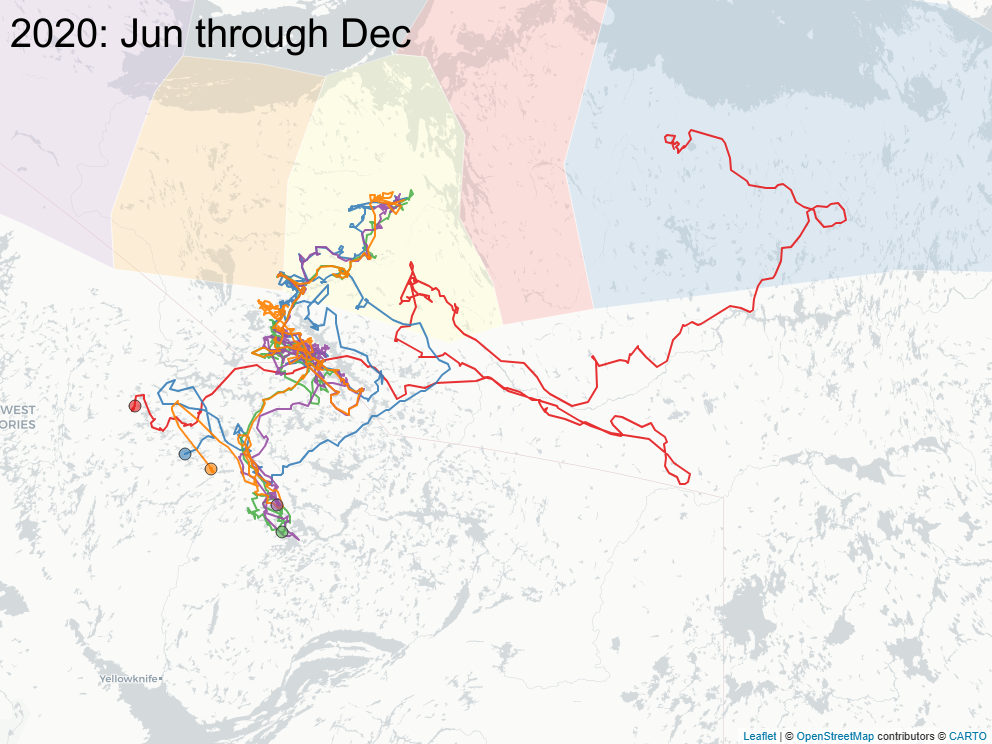
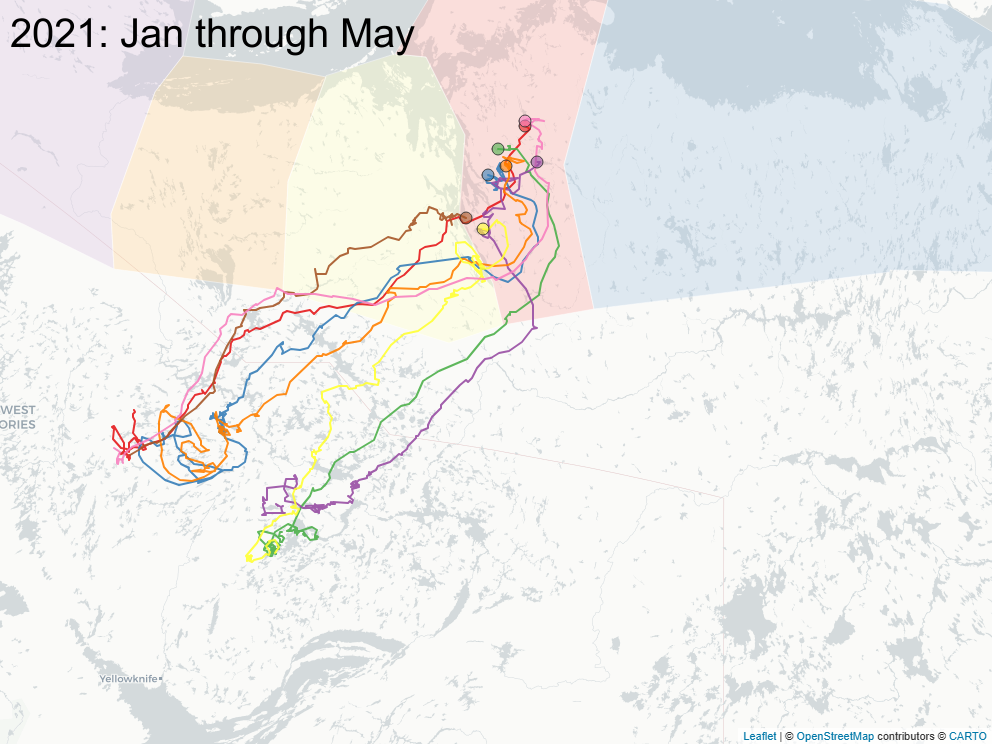
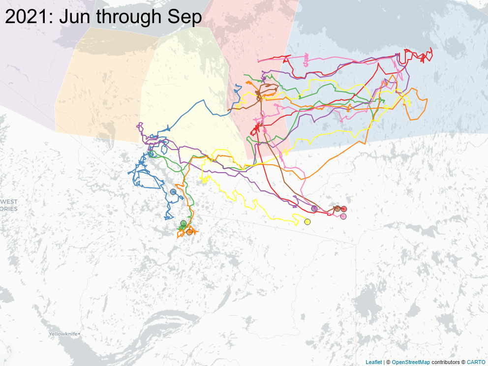
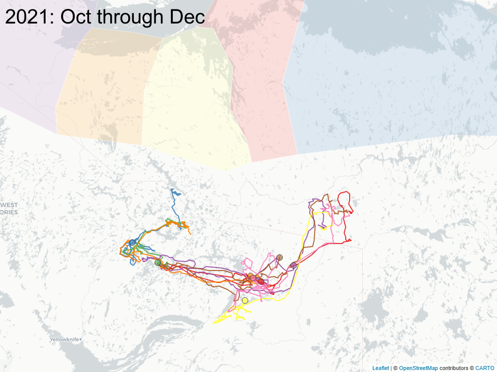
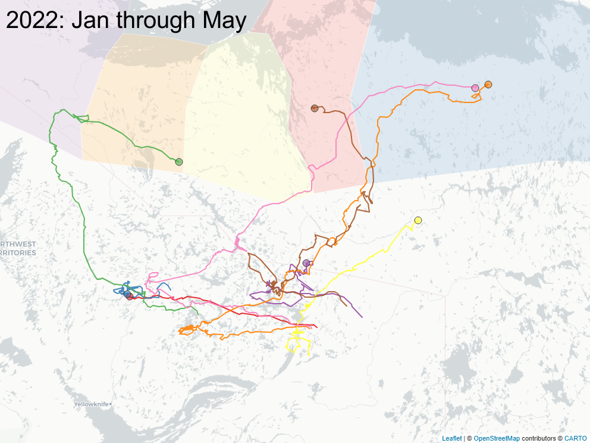
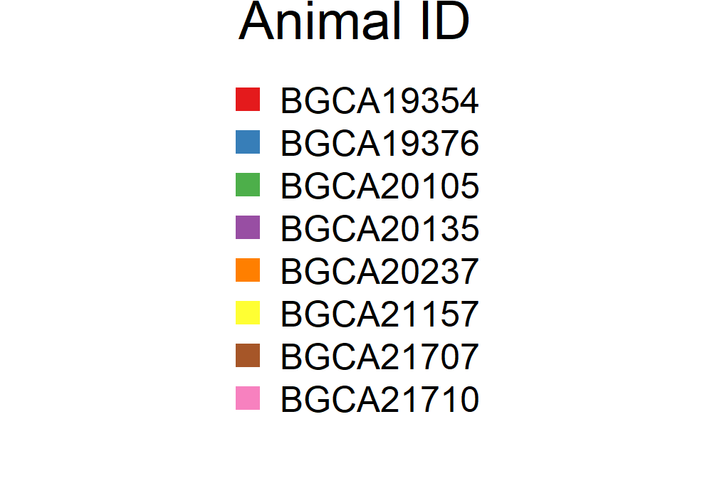
4 Discussion
5 References
Appendix
5.1 APPENDIX A: Total number of animals in each coastal area by Year
| TUK | CBT | BLW | BLE | CG | BIW | BIE | QMG | NEM | Outside | |
|---|---|---|---|---|---|---|---|---|---|---|
| 1996 | 0 | 5 | 4 | 5 | 0 | 9 | 0 | 0 | 0 | 0 |
| 1997 | 0 | 4 | 5 | 5 | 0 | 6 | 0 | 0 | 0 | 1 |
| 1998 | 0 | 3 | 5 | 5 | 0 | 1 | 0 | 0 | 0 | 0 |
| 1999 | 0 | 7 | 12 | 4 | 0 | 7 | 0 | 0 | 0 | 0 |
| 2000 | 0 | 2 | 1 | 3 | 0 | 2 | 0 | 0 | 0 | 1 |
| 2001 | 0 | 0 | 0 | 0 | 1 | 0 | 0 | 0 | 0 | 1 |
| 2003 | 0 | 8 | 3 | 0 | 0 | 0 | 0 | 0 | 0 | 0 |
| 2004 | 0 | 2 | 2 | 0 | 0 | 1 | 0 | 0 | 0 | 0 |
| 2005 | 0 | 8 | 9 | 7 | 0 | 1 | 0 | 0 | 0 | 1 |
| 2006 | 9 | 12 | 16 | 13 | 0 | 4 | 0 | 11 | 0 | 7 |
| 2007 | 5 | 19 | 19 | 10 | 0 | 10 | 0 | 12 | 0 | 2 |
| 2008 | 10 | 22 | 24 | 24 | 0 | 8 | 3 | 18 | 1 | 18 |
| 2009 | 19 | 24 | 43 | 38 | 1 | 13 | 1 | 22 | 1 | 9 |
| 2010 | 12 | 12 | 26 | 37 | 1 | 20 | 1 | 19 | 0 | 8 |
| 2011 | 9 | 8 | 13 | 17 | 0 | 18 | 0 | 12 | 0 | 1 |
| 2012 | 16 | 21 | 39 | 46 | 0 | 20 | 1 | 21 | 0 | 3 |
| 2013 | 12 | 16 | 29 | 24 | 0 | 12 | 0 | 6 | 3 | 4 |
| 2014 | 7 | 14 | 17 | 21 | 0 | 16 | 0 | 27 | 0 | 2 |
| 2015 | 18 | 40 | 43 | 26 | 0 | 31 | 0 | 32 | 0 | 0 |
| 2016 | 6 | 27 | 31 | 33 | 0 | 27 | 0 | 21 | 2 | 0 |
| 2017 | 3 | 25 | 17 | 31 | 0 | 31 | 0 | 24 | 1 | 2 |
| 2018 | 10 | 33 | 42 | 31 | 0 | 14 | 4 | 24 | 1 | 2 |
| 2019 | 5 | 20 | 20 | 29 | 3 | 24 | 7 | 23 | 0 | 3 |
| 2020 | 5 | 16 | 11 | 34 | 1 | 38 | 0 | 12 | 0 | 4 |
| 2021 | 0 | 0 | 47 | 56 | 0 | 31 | 8 | 19 | 0 | 1 |
| 2022 | 0 | 1 | 45 | 54 | 2 | 36 | 2 | 20 | 0 | 0 |
| 2023 | 0 | 0 | 34 | 56 | 3 | 29 | 1 | 56 | 0 | 2 |
| 2024 | 0 | 1 | 52 | 56 | 2 | 18 | 0 | 34 | 1 | 1 |
| 2025 | 0 | 1 | 51 | 60 | 1 | 24 | 3 | 26 | 2 | 2 |
5.2 APPENDIX B: Calving dates across herds
We applied the method developed in (Couriot et al. 2023) and applied it to all data through 2025 to obtain a mean and standard error of calving dates by each coastal area. Summary results below.
| Coastal Area | No. | % | No. | % | Peak date |
|---|---|---|---|---|---|
| Tuktoyaktuk Peninsula | 63 | 54 | 54 | 46 | 27 May ± 8.3 |
| Cape Bathurst | 201 | 73 | 73 | 27 | 30 May ± 7.5 |
| Bluenose Lake West | 400 | 80 | 101 | 20 | 02 Jun ± 7.1 |
| Bluenose Lake East | 504 | 89 | 65 | 11 | 05 Jun ± 6.9 |
| Coronation Gulf | 12 | 92 | 1 | 8 | 08 Jun ± 9.4 |
| Bathurst Inlet West | 266 | 77 | 81 | 23 | 03 Jun ± 5.8 |
| Bathurst Inlet East | 26 | 84 | 5 | 16 | 09 Jun ± 8.3 |
| Queen Maud Gulf | 339 | 87 | 50 | 13 | 07 Jun ± 6.2 |
| Northeast Mainland | 9 | 100 | 0 | 0 | 06 Jun ± 5 |
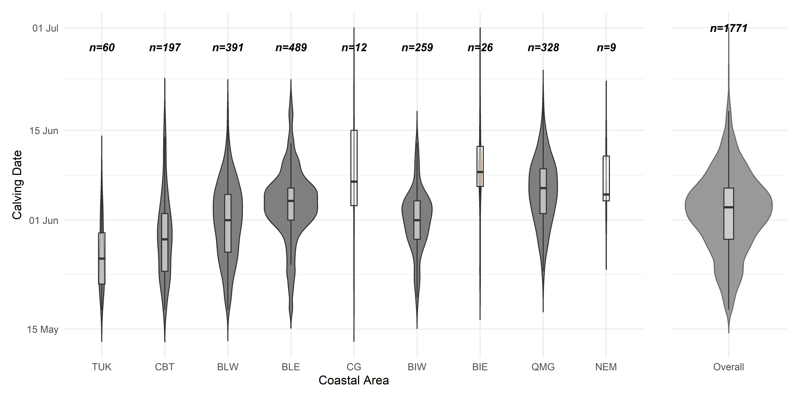
5.3 APPENDIX C: Population Interpolation
Raw numbers of caribou population estimates for the NWT herds were obtained from GNWT-ECC surveys. These surveys are typically conducted every 3-5 years using aerial photography methods, with associated uncertainty estimates (standard errors or confidence intervals). The data span from 2006 to 2025, with some herds having earlier or later initial surveys. Raw population data for the herds are plotted below:
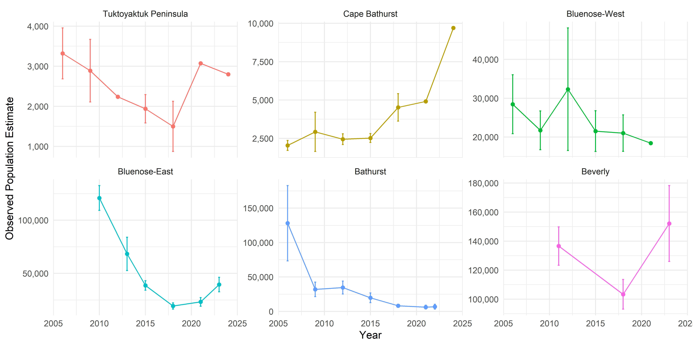
We interpolated and extrapolated these estimates over the complete period 2006-2025 using generalized additive models (GAMs) fitted independently for each herd. We modeled observed population counts \(N_t\) at time \(t\) as:
\[\log(\mathbb{E}[N_t]) = f(t)\]
where \(f(t)\) is a thin-plate regression spline with basis dimension \(k = \min(5, \lfloor 0.8n \rfloor)\), and \(n\) is the number of observations for that herd. The log link ensured positive predictions. Models were fitted using restricted maximum likelihood (REML) via the mgcv package in R (mgcv?).
For herds where survey data began after 2006 (e.g., Bluenose-East: 2010, Beverly: 2011), we imputed values for the missing early years using the earliest available observation. These imputed points—carrying the same estimate and uncertainty as the first survey—were included as input data for model fitting. This assumes approximate population stability prior to the first survey and anchors the spline during periods without observations.
To ensure prediction intervals reflect observation-level uncertainty, we used a parametric bootstrap. For each of 500 iterations:
Observed population estimates (including imputed early values) were resampled from \(N(\hat{N}_t, \text{SE}_t^2)\), where \(\text{SE}_t\) is the reported standard error. For observations lacking reported uncertainty, SE was imputed using the median coefficient of variation (CV) across observations with known SE for that herd. Resampled values were floored at 100 to prevent negative or near-zero populations.
A GAM was fitted to the resampled observations.
Predictions were extracted for each year in 2006–2025.
Prediction intervals were computed as the 2.5th and 97.5th percentiles of the bootstrap distribution, with point estimates taken as the median. This approach ensured that (a) prediction uncertainty is at least as large as observation uncertainty, (b) the predicted trajectory respects the range of plausible values given the original confidence intervals, and (c) uncertainty in data-sparse periods was appropriately inflated.
This is a fairly conservative approach to intra/extrapolating population estimates. It assumes:
That population trajectories are reasonably smooth functions of time with high autocorrelation. An inspection of the raw data seems to support this assumptions, though the smooth fails account for a high Tuktoyaktuk Peninsula estimate in 2021 and a low Bathurst one in 2009 for example.
For lack of other information, we assume a constant population prior to the first observation (i.e. between 2006 and the next reported estimate), and after the last observation (until 2025). This is a placeholder reflecting absence of information rather than ecological expectation. This means the Beverly and Bluenose East predictions prior to their first reported estimates (2011 and 2010, respectively) may be underestimates, and the apparent uptick in Bluenose East and Beverly numbers is also slowed.
Early surveys often lack reported uncertainty. The CV-based imputation assumes these observations have comparable relative precision to later surveys.
The resulting predictions are plotted in figure Figure 4 and tabulated in table Table 6 below. The code to replicate these predictions are in the TuktuData package (available upon request).
| Year | Tuktoyaktuk Peninsula | Cape Bathurst | Bluenose-West | Bluenose-East | Bathurst | Beverly |
|---|---|---|---|---|---|---|
| 2006 | 3.3 (2.5–3.9) | 2.6 (1.8–3.3) | 27 (22.6–31.3) | 120.9 (110.4–131.6) | 126.1 (73.2–185) | 137.6 (126.8–147.6) |
| 2007 | 3.1 (2.5–3.6) | 2.6 (1.9–3.1) | 26.6 (22.8–30.6) | 120.1 (113.3–127.3) | 80.9 (54.4–119.8) | 137.3 (130.4–144.1) |
| 2008 | 2.9 (2.5–3.3) | 2.6 (2–3.1) | 26.1 (22.4–30.1) | 121.4 (114.1–128.7) | 55.1 (37.1–81.8) | 136.9 (131–144.5) |
| 2009 | 2.7 (2.4–3.1) | 2.6 (2.1–3) | 25.7 (22.3–30) | 122.8 (115.9–129.3) | 42.2 (27.3–58.2) | 136.3 (130.9–144.2) |
| 2010 | 2.6 (2.2–2.9) | 2.6 (2.2–3) | 25.4 (21.8–30.3) | 118.8 (109.5–127.7) | 34.9 (26.1–43.9) | 135.3 (128.6–143.3) |
| 2011 | 2.5 (2.1–2.8) | 2.6 (2.3–3) | 25 (21.2–31.3) | 105.9 (94.5–119) | 30.9 (22.6–39.2) | 133.3 (124.8–142.6) |
| 2012 | 2.3 (2–2.7) | 2.7 (2.3–3.1) | 24.5 (20.7–32.4) | 87.6 (77–102.1) | 27.5 (16.8–40.5) | 130.2 (118.9–140) |
| 2013 | 2.2 (1.9–2.6) | 2.8 (2.4–3.3) | 24 (20.5–31.9) | 68.6 (58.6–80.9) | 23.9 (12.5–37.3) | 126 (112.5–136.7) |
| 2014 | 2.2 (1.8–2.6) | 2.9 (2.6–3.5) | 23.5 (20.2–29) | 51.6 (43.9–60.1) | 19.8 (9.4–32) | 121.5 (105.6–136.7) |
| 2015 | 2.1 (1.7–2.6) | 3.1 (2.7–3.7) | 22.9 (19.8–27.2) | 38.9 (33.7–44.4) | 15.9 (7–25.3) | 117.2 (99.8–137) |
| 2016 | 2.1 (1.7–2.6) | 3.4 (2.9–4) | 22.4 (19.4–26) | 30 (27–34.4) | 12.4 (5.3–18.2) | 114.3 (96–137.5) |
| 2017 | 2.1 (1.7–2.6) | 3.7 (3.2–4.3) | 21.8 (18.9–25) | 24.7 (20.8–28.6) | 9.7 (4–13.8) | 112.3 (95–138.2) |
| 2018 | 2.2 (1.8–2.6) | 4.1 (3.5–4.8) | 21.3 (18.6–24) | 22.2 (17.9–25.9) | 7.6 (3.1–11.7) | 112.5 (96.9–138.8) |
| 2019 | 2.3 (1.9–2.6) | 4.5 (3.9–5.3) | 20.8 (18.3–23.1) | 21.6 (17.6–25) | 6.4 (2.3–10.2) | 116.3 (102–139.3) |
| 2020 | 2.3 (2–2.7) | 5.1 (4.4–5.8) | 20.2 (18–22.3) | 22.7 (19.5–25.8) | 5.8 (1.8–9) | 123 (108.1–140.2) |
| 2021 | 2.4 (2.1–2.8) | 5.8 (5–6.4) | 19.7 (17.7–21.6) | 25.6 (22.6–28.6) | 5.4 (1.3–8.2) | 130.8 (115.1–146) |
| 2022 | 2.5 (2.2–2.9) | 6.6 (5.9–7.2) | 19.1 (17.3–21) | 30 (27.1–34.2) | 5.4 (1–8.1) | 137.5 (121.6–155.8) |
| 2023 | 2.6 (2.3–3) | 7.5 (6.8–8.2) | 18.7 (16.9–20.5) | 35.3 (31.4–40.8) | 5.2 (0.8–8.3) | 143.6 (129.2–165.7) |
| 2024 | 2.7 (2.4–3.1) | 8.7 (7.7–9.6) | 18.2 (16.3–20.1) | 39.2 (34.7–43.6) | 5 (0.6–8.4) | 149.7 (134.2–168) |
| 2025 | 2.8 (2.4–3.3) | 10 (8.7–11.4) | 17.7 (15.5–20) | 40.8 (35.1–46.6) | 4.3 (0.4–9.1) | 153.7 (136.4–173.8) |